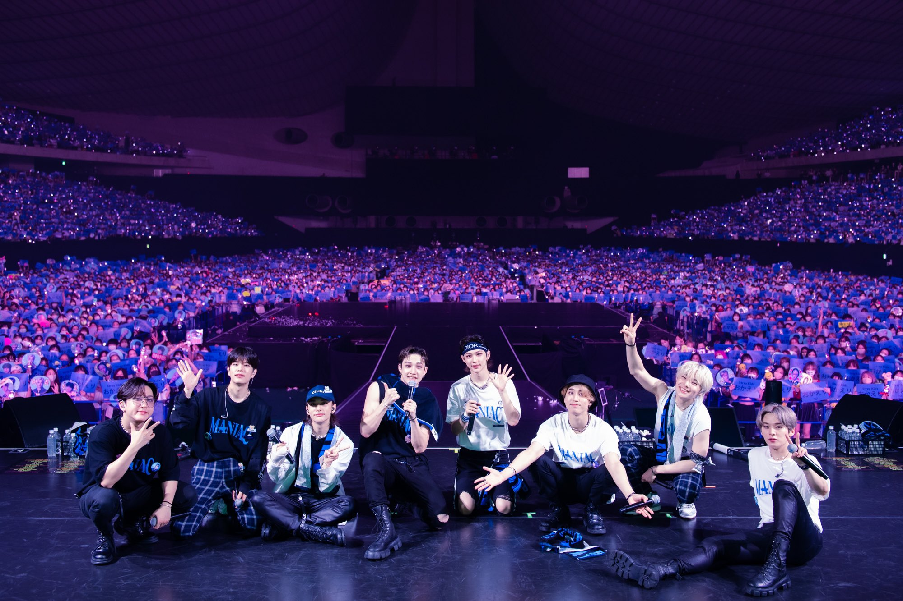
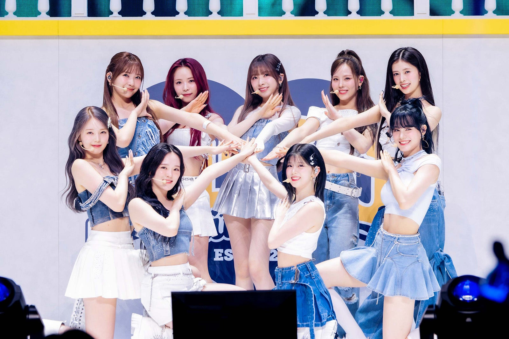

プロフィール
こんばんちー！
2年 SAコース 寺山太一
(06) 19y/o Yup💙
誕生日 ： 1月30日
2018年 4月 西部中学校入学
2021年 3月 西部中学校卒業
2021年 4月 嬉野高等学校入学
2024年 3月 嬉野高等学校卒業
2024年 4月 佐賀コンピュータ専門学校入学
好きなアニメ :
- HUNTER×HUNTER(クロロ=ルシルフルが好き)
- 銀魂(沖田総悟が好き)
- BLEACH(浦原喜助が好き)
- NARUTO -ナルト-(うちはイタチが好き)
趣味
釣り
大物だと、スズキ（60cm）、チヌ(45cm)を釣ったことあります。
ボラ釣りが一番楽しい
推し活
Stray Kids(フィリックス,リノ,バンチャン推し),NiziU(リク,アヤカ推し)
Stray Kidsの好きな曲(Charmer),NiziUの好きな曲(Blue Moon)
ライブにもよく行ってます
 スポーツ観戦
よく観ているのは、格闘技で、MMAとキックボクシングの試合をよく観てます。
よく見てる団体は、RIZIN,K-1,UFC
最近よく見ている選手は、冨沢 大智選手と井上直樹選手と秋元強真選手です。

特技
-
特技に関しては、ただの自慢です。
運動は基本的になんでも得意
中学の時1年だけバスケやってました。（地区の選抜メンバーにも選ばれました。）
選抜の練習がきつかったので１年でやめました。
-
高校では、1、2年で陸上をやっていました。
成績
800m(県3位)1500m(決勝進出)
主に800mと1500mをメインでやっていました。(800mの自己ベストは、2分03秒,1500mの自己ベストは、4分27秒)
どちらの種目も決勝出たことあります。
長距離も少しやっていたので、駅伝にも出ました。（僕は、4区で8km走りました。）
2年生の時の高校総体の800m決勝で3位で自己ベスト更新しました。（2位までインターハイ出場なので悔しかっつたです。）
この後、燃え尽き症候群により最後の高校総体に出場せず陸上をやめました。（キャプテンでしたが、練習週3しか行ってなかったので後輩も嬉しかったと思います。）
-
陸上をやめた後、3年生では、2年の時に掛け持ちしていた和太鼓部に入部しました。
和太鼓部は、全国大会出場が確定していてメンバーも決まっていましたが、初めて4か月で1年の時からやっていた同級生の友達から出場権を奪いました。
クラス同じだったのでくそ気まずかったです。栗達ごめんな
全国大会は、奄美大島に行きました。（海めっちゃきれいだった。）